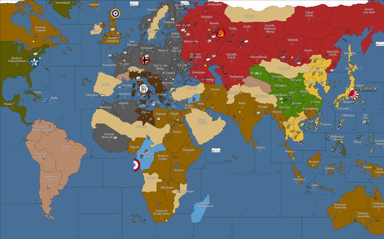

DELUXE WW2v3 October 1941
Credits:
Vodot - initial concept and inspirational artwork
Argothair - coding, graphics, and scenario design
Special Thanks:
I would also like to thank people who contributed features that I chose to use in this map. They did not endorse this particular version, but their work is nevertheless appreciated:
Triplelk Jason Clark - baseline
Zero Pilot Mike McCaughey - integration
ComradeKev - custom code and rules
Seidelin - playtesting of prior versions
Cloud7707 - map changes, especially for Japanese islands

OVERVIEW
This game is a deluxe version of the 'Anniversary' WWv3 1941 Edition, with additional territories, a new player (France), modified national objectives, reduced prices for ships, additional victory cities, defensive bunkers, and a new type of minor factory called a 'barracks.' The game begins in October 1941. This means that the German invasion of the Soviet Union has already begun, so the Germans already control the 'border' territories like the Baltic States, East Poland, and westenr Ukraine. Japan is poised to launch its suprise attack on Pearl Harbor and seize the Pacific colonies of the US and the UK. Free France has just begun to organize an effective resistance in French Equatorial Africa, and the Italian fleet is still a threat in the Mediterranean but has been noticeably worn down by repeated British attacks. For now, German subs run rampant in the north Atlantic, but the impending entry of the US into the war will soon change the balance of naval power there.
MAP NOTES
- Sicily has a land connection to Naples.
- Greece has a land connection to Crete.
- Tibet, Mexico, 'Northern South America', and Brazil are neutral, undefended territories. The first player to move a land unit into those territories during the combat move will take them over.
- Tibet is not worth any PUs, but it is still useful to the Chinese, who generate infantry based on the number of territories they control.
- Vichy France, Peru and Argentina are neutral, defended territories. Any player may attack them during the combat move to try to take control of them. Similarly, the Vichy French cruiser in Sea Zone 13b will attack any player that enters its territory. There is never any penalty for violating neutrality.
- The Eastern Mediterranean (SZ 15) does NOT directly connect to the western Black Sea (SZ 16a) by sea or air due to a limitation in the game engine. However, you can fly planes from the eastern Med through Bulgaria to the Black Sea (or vice versa).
- The oil derricks printed on some territories are each worth 2 PUs/turn if they are controlled by an Axis power, but they offer no special benefit to the Allies. The Allies are assumed to have enough oil from other sources (e.g., the mainland US) that they are not critically short on oil.
- Any enemy ship placed in a 'lend-lease' sea zone will cancel Russia's lend-lease for that region. The Axis can place a ship in SZ 3 or SZ 4 or both in order to block the northern lend-lease route.
- The Allies must control at least 1 of the territories marked with the "Flying Tiger" logo (an airplane with a mouth full of sharp teeth) in order to provide a Flying Tiger aircraft to China.
- Siberia, Mongolia, Himalaya, Afghanistan, Turkey, Saudi Arabia, Sahara, Angola, Mozambique, Spain, Sweden, Switzerland, and the unlabeled Arctic ice sheet are all totally impassible.
REVISED NATIONAL OBJECTIVES
I (Argothair) have never really approved of the standard national objectives on most maps, becuase they reward players for doing things that players were strongly incentivized to do anyway. The UK always wants to liberate France, because it's worth a ton of cash and it has a victory city -- you don't have to bribe them to do so by giving them a national objective. Similarly, Germany always wants to conquer Leningrad and Stalingrad; they're worth lots of cash, they have factories, and they have victory cities. You don't have to give them an objective to do that; they'll try to do it anyway. In my view, national objectives should reward players for taking historically-flavored actions that would not be obviously useful just based on the map.
In this game, I have tried to follow that philosophy by limiting national objectives to two narrowly defined themes. First, the Axis get 2 PUs for each oil derrick they control -- the money goes to whoever controls the oil derrick. In other words, if Italy controls Egypt, then Italy gets 2 extra PUs above and beyond the printed value of Egypt on the map; if Germany controls Egypt, then Germany gets the extra PUs. There are derricks in Venezuela, Romania, the Caucasus, Armenia, Egypt, Iraq, Persia, Burma, Sumatra, Borneo, and Java.
Second, the Russians and the Chinese have the potential to gain specific units based on lend-lease routes. The Russians have three routes: northern, southern, and eastern. Each route is tied to a specific series of land territories that must be Allied-controlled, as well as one or two sea zones that must be cleared of enemy ships. If the route is open, you will get an extra piece automatically added to your 'placement' options, for free. The game will report them as "unplaced from previous turn." They count against your placement limits for a particular factory, but they do not cost you any money. If you do not want to place a unit right away, you can always save it for another turn. The Chinese have two lend-lease routes. First, the burma road will deliver a Chinese artillery if the Allies control India, Bengal, Burma, and Szechuan (which contained the wartime Chinese capital of Chongking). Note that control of Yunnan is not necessary; historically, when the Japanese threatened that region the Allies shifted their supply routes further north and began flying 'over the hump' to bypass that threat. Second, the Americans will deliver a volunteer squadron of fighter planes (known as the 'Flying Tigers') if the Allies control Los Angeles, Hawaii, Szechuan, and any one of the various islands near the southeast coast of China that are marked with a Flying Tiger symbol. The idea is that in order to deliver these medium-range fighters, the US would need a staging ground west of Hawaii from which the planes could take off and then land in central China. There also has to be a functional government in China to deliver the fighters to; if the Axis control Szechuan then the game assumes that Chiang Kaishek has been deposed and that only scattered warlords (who could not support even a volunteer air force) are left to continue the resistance. Note that the total number of Flying Tigers at any given time is limited to 2. If you already have 2 Chinese fighters at the start of the turn, then you will not receive any new fighters that turn, even if one or both of the fighters dies in combat. If you lose a fighter, you can receive new fighters next turn if the lend-lease route is still open.
NEW UNIT TYPES
I have tried to keep the changes to the unit mix to a minimum, because I want the game to retain the flavor of WW2v3. There are three changes that I felt I could not avoid. First, there is a new type of factory called a 'barracks.' It can only be built in land areas that have at least 2 PUs of production (not including oil derricks), and it is capped at producing no more than 2 units per turn, even if the printed PU value is higher. For example, if you put a barracks in India, which is worth 3 PUs, then India could still only produce 2 units per turn. As the name implies, barracks are primarily for training ground troops. They cannot produce battleships, carriers, fighters, bombers, or tanks. New factories can only be built in territories worth at least 3 PUs. A barracks in a territory that is worth at least 3 PUs can be upgraded to a factory, although it is more cost-efficient to just build the factory directly if you can afford to do so.
Second, there is a defensive unit called a 'bunker.' Bunkers do not move, cannot be built, and participate only on defense. They hit on a 4 or less and have 2 hits, like a battleship. If you damage a bunker but do not destroy it during the same battle, it will immediately repair itself for free once the combat is over. Bunkers represent not just literal trenches and pillboxes (Normandy, NW Europe), but also the difficulty of conquering areas that had either very rough terrain (Finland, Amur, etc.) or millions of hostile civilians who would have had to be cleared through painstaking urban warfare (Leningrad, Moscow).
Finally, ships are cheaper. They have the same combat strengths and speed, they're just all more affordable to buy. I found that in classic WW2v3, you should almost never buy any more ships than you absolutely need to project power across an ocean -- it was not an interesting strategic decision. You either *need* a ship, or it's a terrible decision to buy one. With the lower prices, I think players will face more interesting choices about when to expand their navies beyond the bare minimum required to operate in a theater; you might actually volunteer to buy, e.g., a cruiser at 9 PUs for its bombardment ability, and not simply because you must have something to defend your transports.
NEW VICTORY CITIES
I have added several new victory cities compared to the original WW2v3 map, especially in the Global South. A couple of cities may not be self-explanatory: Szechuan contained the Chinese wartime capital of Chungking; if the Axis had captured it then the Chinese Nationalist government might have fallen, since they had already evacuated from Shanghai and Wuhan earlier in the war. Irktusk was not an amazingly important Soviet city, but if the Axis capture it then it means that the Soviet position in the Pacific has essentially collapsed; if the Japanese had captured Buryatia (Vladivostok) then the Russians would most likely have kept fighting to take it back, but if the Japanese made it all the way to Irkutsk then the Soviets would have had to write off Pacific Siberia as lost. Please note that Brazil contains a victory city even though it is neutral at the start of the game, so if the Allies occupy it then their VC count will go up by one even though the Axis VC count will not change.
At the start of the game, the Allies control 17 victory cities and the Axis control 7 victory cities. By default, the Allies need 21 victory cities to win (a net gain of 4) and the Axis need 16 victory cities to win (a net gain of 9). The targets are intentionally asymmetrical because the Axis start with the momentum in the early game; if they are losing multiple victory cities, they're unlikely to ever catch up, but the Allies are expected to lose a few victory cities at first even if they are going to eventually go on to win the game. If you prefer a longer or shorter game, you can change the settings to 'total victory' (24 Allied / 19 Axis) or 'projection of power' (19 Allied / 13 Axis) in the map setup screen, or just stop playing whenever you and your opponent agree that the game's ultimate outcome is clear.
CHINESE MOVEMENT LIMITS
In addition to obviously Chinese territories, the Chinese are allowed to attack and move into Hulunbuir, Manchuria, Korea, Kwangtung, Indochina, Thailand, and Burma. They cannot move into or attack any sea zones, so they cannot reach Formosa.
AMERICAN SURPRISE
America was not expecting to join the war so quickly, so on their first turn, they only have 20 PUs to spend instead of their full income. In future turns, their income will be equal to what they collect on the map.
STRATEGY HINTS
- Germany -- you can take Leningrad and/or Stalingrad on the first turn, but you probably can't hold them against the immediate Russian counterattack, so consider whether these attacks serve your long-term strategy. Eliminating the bunkers while the territories are still weakly defended is useful, but you will need a critical mass of troops on the eastern front to continue to take and hold territory. Be careful about placing bunkers or factories in Ukraine; depending on where you focus your efforts, you might not hold that territory throughout the game. Your choice of which ships to attack in the Atlantic affects whether you can make a serious play for Egypt. If you sink Task Force G (the British carrier in Sea Zone 12) then the Axis can probably hold the southern Mediterranean (Sea Zone 14b) for quite some time, which allows you to ferry more troops from, e.g., the Balkans to Libya or Tobruk. However, if the British ships at Gibraltar and Alexandria are allowed to combine in Sea Zone 14b, then the Italians are unlikely to be able to push them out again. On the other hand, sinking a carrier, fighter, and destroyer will soak up most of your striking power for the first turn; you might be better off spreading your subs around to some of the more lightly-defended targets in order to delay an Allied attack on France.
- Russia -- Your Pacific territories are somewhat more valuable than they were in the original WW2v3, and there is a barracks and a VC in Irkutsk, so don't be too quick to abandon them to the Japanese. If you only build the 2 units per turn allowed by the starting barracks in Irkutsk, you will probably lose the territory sooner or later; it's up to you whether that's an acceptable loss. If not, you'll need to send some reinforcements, such as tanks from the Urala or planes from Moscow. Compared to the original WW2v3, your southern flank is somewhat safer, thanks to additional territories like Iraq and Sea Zone 35b that delay the progress of Italian and Japanese attacks in the Middle East. China is also somewhat larger. There is thus little need to rush troops to Persia or China in the opening, and you should especially not send Soviet troops into a still-neutral Tibet unless you absolutely need the most direct route to reinforce Szechuan, since a Soviet-owned Tibet will prevent the Chinese from counting it as one of their territories while giving you no additional income.
- Japan -- You have enough troops and transports to (barely) take every single Flying Tiger territory on the first turn if you get reasonably lucky on your dice, but it's an open question whether this is actually the best use of your opening. You may prefer to get an early start on conquering Siberia or Burma, or you might want to concentrate your naval forces in the south Pacific to avoid having unprotected transports picked off by the 'Dutch' ships in Sea Zone 38b or the Free French sub off the coast of Tahiti. You have nine fighters that could potentially strike the US Pacific Fleet, and you can land some of them on the Marshall Islands if necessary, so you can make an attack that's broader than the historical Pearl Harbor if you wish, but this may interfere with your ability to take and hold enough territory on the Asian mainland to adequately fuel your economy.
- Britain -- You start the game with a very large economy, and it's up to you to decide how to use it. There are several reasonable 'bases' on the Pacific side of the map that you could invest in and hope to hold, including India, Eastern Australia, and even (with a bit of help from the Americans) New Guinea. If you don't build barracks or factories in this region, you will eventually lose it all, but that will take some time, and during that time you might make decisive gains on the European front that will compensate you for those losses; liberating, e.g., Norway, Northwest Europe, and French West Africa is collectively worth 10 PUs. Because the 'money islands' of Indonesia have their wealth partly represented by oil derricks, losing them will not be quite as painful for you as before, although they are still very useful for the Japanese. Note that Normandy, Vichy, and Paris are all original French territories and will revert to French control immediately after being liberated by the British, so don't plan on using mainland France to fuel your economy. One entertaining gambit is to build 5 British bombers on the first turn, leaving the Italian fleet with few places to hide.
- France -- The Free French forces are initially somewhat dispersed -- you have a fighter in Haiti that was historically intended for delivery to Paris, a sub in Tahiti representing volunteers from French Polynesia, and of course your main Free French Army in French Equatorial Africa. One obvious goal is to build up enough forces to attack French West Africa, but the bunker there is somewhat unforgiving; if you can't completely destroy it, then it won't do you any good. Another option is to have the French take Brazil -- it's ahistorical, but it gives you a 3-PU territory from which you can build tanks and airplanes. Finally, you can ignore French West Africa and send your forces marching northeast to assist with the defense of Egypt. If the British do manage to liberate Normandy or southern France, consider building a barracks there even if you can't hold the territory yet -- if the Italians capture it, and the British liberate it again, then on your next turn you'll be able to deploy units there.
- Italy -- The various islands bordering the central Mediterranean tend to be in two or even three sea zones at a time, meaning that they're easy to trade, but hard to keep the Allies out of unless you've got total control of the entire Med. Your starting armies are a long walk from the eastern front with Russia, so if you plan to send an expeditionary force (or even just can-opening tanks) to the eastern front, you'll need to get started on that project fairly early in order to arrive in time for the decisive battles. You have a little more cash than Italy did in the original WW2v3, but it will be challenging to project your power somewhere that really matters.
- America -- The additional Pacific islands, each of which is worth at least 1 PU, makes island hopping a somewhat more worthwhile strategy than the original WW2v3. Note that the US Pacific Coast (Sea Zone 56) has been split into three sections. The southernmost section (56a / San Diego) is closer to the south Pacific islands, and the central section (56b / San Francisco) is closer to Alaska and the Aleutian Islands, which now include a VC. The northernmost segment (56c / Seattle) is really only necessary if the US Pacific fleet is under heavy threat and needs a place to hide out of range of Japanese carriers. The only enemy-held territory you can reach directly from the US East Coast is Morocco, so consider walking newly built infantry to Eastern Canada, from where you can shuttle them to Norway, NW Europe, Sardinia, or Algeria.
- China -- China is larger and harder to destroy compared to the original WW2v3, and the potential damage they can do to Japan if left unchecked is higher, since they are allowed to occupy most of southeast and northeast Asia. Although Hong Kong is no longer a victory city, the Chinese wartime capital of Chungking (in Szechuan) is. You're allowed to move your AA gun out of Szechuan if you need to, but you can't get another one if it's destroyed, and you need Szechuan to collect either of your lend-lease objectives, so you will usually want to conduct your opening moves with an eye toward creating a buffer to protect Szechuan. If the Japanese move into Burma, consider liberating it yourself to protect your supply of artillery. Note that your income is based on the number of territories you control, not on their PU value, so Tibet is worth as much to you as Shanghai or Manchuria.